FATEC SÃO JOSÉ DOS CAMPOS · 2024–2026
PORTFÓLIO DE PROJETOS
BANCO DE DADOS · CINCO PROJETOS · DESENVOLVIDOS EM EQUIPE
Olá! Meu nome é Luiz e atualmente curso o 6º semestre de Banco de Dados na Fatec de São José dos Campos. Trabalho como Business Analyst I na Your ID INC.
Este portfólio reúne os cinco projetos que desenvolvi em equipe com o time Steam Ducks, um por semestre, entre 2024 e 2026. O registro completo (contribuições e aprendizados) está nos detalhes de cada projeto.
1º SEMESTRE · 1/2024
Aplicação em terminal desenvolvida para executar operações matemáticas, conversões numéricas e validações de entrada, evoluindo de VisualG para TypeScript ao longo das sprints.
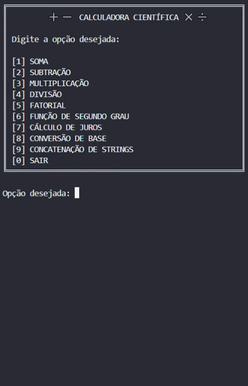
No primeiro semestre de 2024, desenvolvemos o projeto Calculadora Científica, uma aplicação em terminal criada para executar operações matemáticas, conversões entre bases numéricas e outros cálculos complementares. O projeto foi desenvolvido em contexto acadêmico, com foco no aprendizado prático de programação e organização de software, atendendo a um cliente interno, o CADI (Centro de Aprendizagem em Desenvolvimento e Integração) da Fatec São José dos Campos.
O desenvolvimento foi dividido em sprints, com as primeiras entregas realizadas em VisualG e a evolução posterior para TypeScript. Entre as funcionalidades implementadas estavam operações aritméticas, divisão, fatorial, cálculo de juros, concatenação de strings e conversões entre diferentes bases numéricas. Essa transição foi importante para consolidar a lógica de programação e também para introduzir o time a práticas mais próximas do desenvolvimento profissional, como modularização, versionamento e integração entre funcionalidades.
O projeto foi desenvolvido pela equipe Steam Ducks, formada por nove integrantes (Alexander Silva, Carlos Daniel, Isabelly Sousa, Lucas Acosta, Matheus Barbosa, Rafaella Cruz, Samuel Prado, Theo da Rosa e eu) e organizada segundo o Scrum. Meu papel na equipe foi o de desenvolvedor.
Como desenvolvedor, minha participação no projeto se concentrou em três frentes: a integração das operações ao menu principal; a validação de entradas e o tratamento de erros na operação de divisão; e o desenvolvimento das conversões entre bases numéricas. Além da construção funcional da calculadora, essas frentes exigiram cuidado com a experiência de uso no terminal, com a organização dos menus e com o tratamento de entradas inválidas.
Nas primeiras sprints, participei da organização do fluxo principal da calculadora, conectando ao menu as operações desenvolvidas pela equipe e ajudando a estruturar a navegação em terminal. O menu centralizava soma, subtração, multiplicação, divisão, fatorial, função de segundo grau, cálculo de juros, conversões e concatenação de strings, além de submenus específicos, como o de conversão de base. Esse trabalho envolvia menos a lógica em si e mais a garantia de que tudo o que o time produzia pudesse ser acessado de forma clara pelo usuário, o que me obrigou a alinhar com os colegas o nome e o comportamento esperado de cada função antes de integrá-la.
Em seguida, assumi a validação de entrada da operação de divisão. Em uma aplicação de terminal, o usuário interage apenas digitando valores, e as primeiras versões da função falhavam com entradas não numéricas, com uma quantidade insuficiente de números ou com divisão por zero. Trabalhei para tratar cada um desses cenários, além de cuidar da exibição do resultado.
EXEMPLO VISUAL
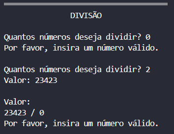
Por fim, desenvolvi funcionalidades de conversão entre bases numéricas, como a conversão de binário para octal. A implementação exigiu validar a cadeia binária antes de processá-la, para impedir que valores inválidos fossem convertidos, e transformar o valor em etapas, passando primeiro por decimal e depois por octal. Foi a contribuição em que mais exercitei estruturas de repetição, condicionais e manipulação de dados.
O desenvolvimento da calculadora foi principalmente uma oportunidade para consolidar minha lógica de programação. Ao trabalhar com operações matemáticas, validação de entradas, estruturas condicionais, repetições e conversões entre bases numéricas, precisei aprender a dividir problemas maiores em etapas menores e transformar cada regra em uma sequência de instruções que o programa pudesse executar.
Um dos principais aprendizados foi entender que fazer uma funcionalidade funcionar é apenas uma parte do desenvolvimento. As situações de entrada inválida e os diferentes caminhos que o usuário poderia seguir me obrigaram a pensar também nos casos que poderiam interromper ou comprometer a execução. A validação da divisão e das conversões numéricas, por exemplo, mostrou na prática a importância de considerar diferentes cenários antes de definir uma solução.
Com essa experiência, passei a enxergar a programação menos como a escrita de comandos isolados e mais como o processo de transformar um problema em regras, condições e etapas que possam ser implementadas de forma organizada.
Competências desenvolvidas: Lógica de programação (básico/intermediário) · Estruturas condicionais e funções (básico/intermediário) · Validação de entradas (básico/intermediário) · Tratamento de erros (básico/intermediário) · Aplicações de terminal (básico/intermediário) · Conversão entre bases numéricas (básico/intermediário).
A evolução do projeto de VisualG para TypeScript foi importante para começar a aplicar a lógica que eu já vinha desenvolvendo em uma linguagem mais próxima das ferramentas utilizadas no mercado. Essa mudança também trouxe uma preocupação maior com a organização do código, a definição de funções e a separação das responsabilidades dentro da aplicação.
Como o projeto possuía diferentes operações e funcionalidades conectadas ao menu principal, comecei a perceber a importância de estruturar o código de maneira que novas funcionalidades pudessem ser adicionadas sem comprometer aquilo que já estava funcionando. Esse contato inicial com TypeScript ajudou a desenvolver minha atenção para legibilidade, organização e manutenção do código.
Ainda considero meu conhecimento de TypeScript inicial, mas essa experiência foi importante porque marcou a transição entre aprender conceitos de programação e começar a aplicá-los em uma linguagem utilizada em projetos de desenvolvimento de software.
Competências desenvolvidas: TypeScript (básico) · Modularização de código (básico).
O desenvolvimento em equipe também me apresentou de forma mais prática ao Git e GitHub. Conforme cada integrante trabalhava em diferentes partes da calculadora, o versionamento deixou de ser apenas uma forma de armazenar o código e passou a fazer parte da organização do próprio projeto.
Aprendi a utilizar commits, acompanhar alterações, integrar diferentes partes do código e lidar com merges. Esse processo mostrou que o histórico de alterações também é uma ferramenta de colaboração, permitindo entender o que foi modificado e facilitando a integração das contribuições de diferentes integrantes.
Foi também um primeiro contato com uma prática que se tornou fundamental nos projetos seguintes: organizar o desenvolvimento de forma que outras pessoas consigam acompanhar, revisar e integrar aquilo que foi produzido.
Competências desenvolvidas: Git e GitHub (básico/intermediário).
Integrar as operações ao menu principal foi o momento em que percebi, na prática, que uma contribuição individual não existe de forma isolada. Cada função que eu conectava ao menu havia sido escrita por outro integrante, e qualquer alteração minha na navegação afetava o trabalho deles. Mais de uma vez precisei conversar com um colega para entender o comportamento esperado de uma operação antes de integrá-la, e também precisei avisar quando uma mudança minha exigia um ajuste do lado deles.
Essa dinâmica me fez desenvolver uma visão mais colaborativa sobre o desenvolvimento. Passei a alinhar alterações antes de fazê-las, a comunicar problemas assim que apareciam e a considerar o impacto das minhas decisões sobre as partes compartilhadas do projeto.
Mais do que dividir tarefas, essa experiência me ensinou que trabalho em equipe significa construir uma solução em conjunto e assumir responsabilidade também pelo impacto da sua parte no resultado final.
O projeto foi organizado em sprints, e esse foi meu primeiro contato com entregas incrementais. No início, tive dificuldade em me adaptar a essa dinâmica, porque eu tendia a querer concluir uma funcionalidade por completo antes de apresentá-la. A migração de VisualG para TypeScript ao longo das sprints mudou essa percepção: como as entregas eram parciais e frequentes, a troca de linguagem aconteceu sem que perdêssemos o que já funcionava.
Vivenciar isso na validação da divisão e nas conversões me ajudou a dividir o que eu precisava fazer em partes que coubessem em uma sprint e a aceitar que uma versão parcial funcionando vale mais do que uma versão completa que não é concluída dentro do prazo.
O contato com Scrum foi importante para desenvolver uma postura mais organizada e adaptável, principalmente por mostrar que desenvolvimento de software envolve não apenas programação, mas também planejamento, acompanhamento e colaboração contínua.
A validação da divisão me ensinou de forma concreta a importância da disciplina no desenvolvimento. A primeira versão da função funcionava para os casos esperados, mas falhava assim que o usuário digitava uma letra, informava um único número ou tentava dividir por zero. Precisei voltar ao código mais de uma vez para cobrir cada um desses cenários, e o mesmo aconteceu com a validação da cadeia binária nas conversões.
Essas situações mostraram que uma solução precisa considerar não apenas o cenário esperado, mas também aquilo que o usuário pode fazer de errado. Conforme o projeto cresceu, passei a prestar mais atenção na organização do código, na estrutura das funções e na forma como as alterações eram versionadas.
Essa experiência contribuiu para desenvolver uma primeira noção de qualidade e disciplina no desenvolvimento. Comecei a entender que escrever código é também estabelecer padrões que facilitem sua leitura, manutenção e evolução.
2º SEMESTRE · 2/2024
Sistema desktop desenvolvido para apoiar a avaliação de integrantes de equipe com base em critérios definidos pelo administrador, incluindo autenticação, gestão de grupos, critérios e relatórios.
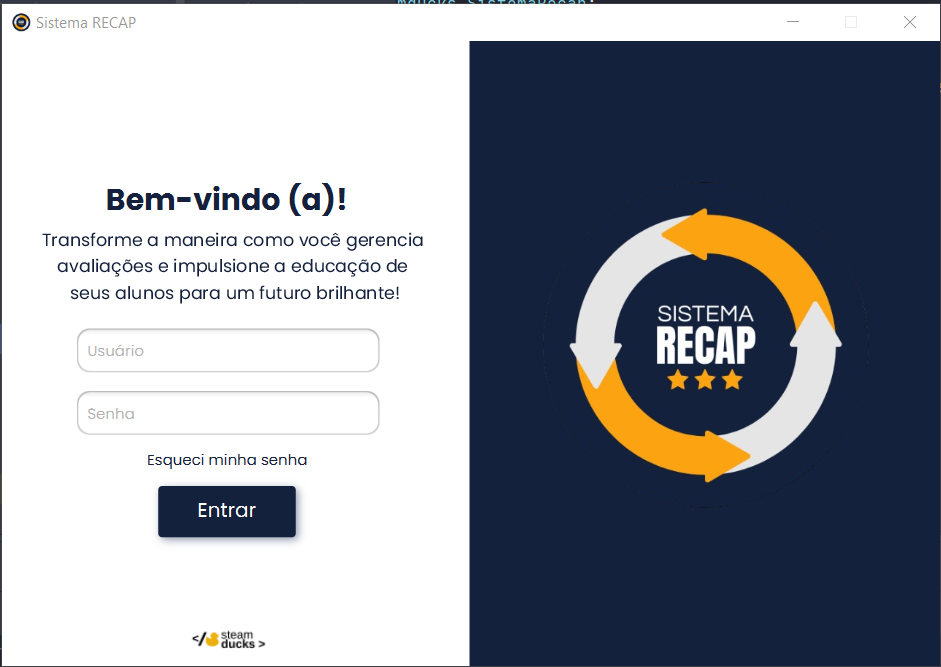
No segundo semestre de 2024, desenvolvemos o PACER Assessment System, um sistema desktop criado para permitir a avaliação de integrantes de grupo com base em critérios previamente definidos. O projeto foi construído em contexto acadêmico, novamente tendo o CADI como cliente interno, e tinha como objetivo tornar o processo de avaliação entre os integrantes das equipes de API mais estruturado e transparente.
A aplicação contemplava funcionalidades como autenticação de usuários, gerenciamento de grupos, definição de critérios de avaliação, cadastro de sprints e geração de relatórios. O projeto também envolveu uma etapa de modelagem de dados e documentação, garantindo que a solução estivesse bem definida tanto do ponto de vista funcional quanto estrutural.
A equipe Steam Ducks contou com nove integrantes neste semestre (Alexander Silva, Carlos Daniel, Isabelly Sousa, Lucas Acosta, Matheus Barbosa, Rafaella Cruz, Samuel Prado, Theo da Rosa e eu), organizados segundo o Scrum. Meu papel na equipe foi o de Product Owner.
Como Product Owner, minha atuação esteve concentrada na organização do produto e nos artefatos que orientavam o time, e não na implementação em código. Ao longo do semestre, isso se traduziu em três responsabilidades principais: manter a visão do produto coerente com o que estava sendo desenvolvido, escrever as user stories e acompanhar os artefatos das sprints, e manter a documentação do projeto atualizada.
O primeiro trabalho foi organizar a visão do produto. O sistema possuía módulos diferentes (autenticação, grupos, critérios, sprints e relatórios), e era preciso garantir que a ordem em que eles seriam construídos fizesse sentido para o objetivo central da aplicação: permitir que o professor cadastrasse grupos, critérios e sprints e que os alunos avaliassem os colegas ao final de cada ciclo. Isso significou acompanhar a estrutura geral do sistema, apoiar a definição do que entraria em cada entrega e verificar, sprint a sprint, se o que estava sendo desenvolvido continuava alinhado ao que o projeto precisava entregar.
Em paralelo, fui responsável por escrever as user stories do projeto, descrevendo cada funcionalidade a partir da perspectiva de quem a utilizaria, professor ou aluno, para orientar o desenvolvimento do time. Também organizei os artefatos de acompanhamento das sprints, como os gráficos de burndown, que funcionavam como evidência do progresso de cada ciclo, e os wireframes, que representavam a estrutura esperada das telas. Os wireframes foram elaborados por outros integrantes do time; minha atuação sobre eles foi de organização e publicação no repositório.
EXEMPLO VISUAL
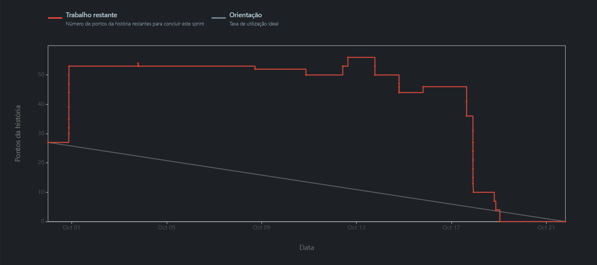
A terceira frente foi a documentação contínua. Pelo histórico do repositório, minha participação esteve fortemente ligada à atualização do README, à organização dos arquivos e à publicação dos artefatos usados na apresentação e no entendimento do sistema. Esse trabalho ajudou a consolidar a visão do projeto, registrar sua evolução e facilitar a comunicação das funcionalidades e requisitos para quem consultasse o repositório, além de apoiar a apresentação acadêmica e a formalização dos resultados da equipe.
EXEMPLO VISUAL
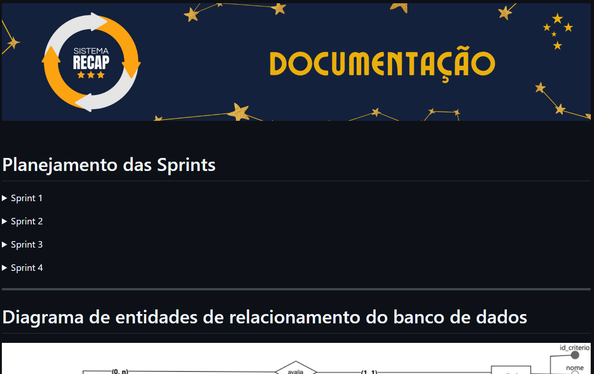
O segundo semestre marcou uma mudança importante na minha trajetória dentro dos projetos acadêmicos: passei a atuar como Product Owner. Depois de ter uma experiência mais voltada ao desenvolvimento no semestre anterior, comecei a enxergar o projeto não apenas pela perspectiva de implementação, mas também pela necessidade de entender o produto como um todo.
Também comecei a compreender melhor o papel do Product Owner como uma ponte entre a necessidade do produto e o trabalho do time. Mesmo estando em uma experiência acadêmica e inicial nessa função, esse foi um contato importante com priorização, organização de entregas, acompanhamento de requisitos e tomada de decisões sob a perspectiva do produto.
Competências desenvolvidas: Product Owner (básico/intermediário) · Gestão de produto (básico/intermediário) · Escrita de user stories (básico/intermediário) · Análise e organização de requisitos (básico/intermediário).
A documentação passou a ter uma importância muito maior na minha atuação durante esse projeto. Diferentemente do semestre anterior, em que minha contribuição estava mais concentrada na implementação de funcionalidades, no PACER precisei manter informações do projeto organizadas e atualizadas para que outras pessoas conseguissem compreender a solução e acompanhar sua evolução.
Trabalhar com README, artefatos de planejamento e materiais utilizados durante as apresentações me mostrou que documentação não é apenas um registro complementar ao desenvolvimento. Ela também funciona como uma forma de preservar contexto, comunicar decisões e tornar o produto compreensível para diferentes pessoas.
Essa experiência desenvolveu minha capacidade de transformar informações do projeto em uma documentação mais estruturada, algo que se tornou especialmente relevante para minha atuação posterior em funções que envolvem requisitos, organização e comunicação entre diferentes áreas.
Competências desenvolvidas: Documentação de software (intermediário) · README e documentação técnica (intermediário).
Mesmo não sendo responsável pela implementação nem pela modelagem do sistema, acompanhar sua construção me aproximou de diferentes artefatos utilizados para representar uma solução, como DER, wireframes e estruturas funcionais. Isso me permitiu desenvolver uma visão mais ampla sobre como uma necessidade pode ser representada antes ou durante sua transformação em software.
Esse contato foi importante porque comecei a enxergar a relação entre diferentes níveis do projeto: requisitos, experiência do usuário, estrutura de dados e funcionalidades. Como Product Owner, essa compreensão ajudava a acompanhar o desenvolvimento sem precisar estar diretamente envolvido em cada implementação.
Foi também um passo importante para desenvolver minha capacidade de ler e interpretar artefatos técnicos, conectando aquilo que estava sendo documentado com o comportamento esperado do produto.
Competências desenvolvidas: Leitura e interpretação de artefatos técnicos (DER, wireframes) (básico).
O contato com Scrum também ganhou uma nova dimensão neste semestre. No primeiro projeto, eu havia experimentado o processo principalmente como desenvolvedor. Agora, como Product Owner, passei a observar as sprints e as entregas a partir de uma perspectiva diferente, mais relacionada à organização e à evolução do produto.
Acompanhar burndown, artefatos, entregas e o andamento das funcionalidades me ajudou a compreender melhor como o progresso do time pode ser acompanhado ao longo de um ciclo de desenvolvimento. Também percebi que planejamento e acompanhamento precisam estar conectados ao objetivo do produto, e não apenas à quantidade de tarefas concluídas.
Essa experiência ampliou minha compreensão sobre desenvolvimento ágil e me deu uma visão inicial de como diferentes papéis dentro de um time contribuem para transformar uma ideia em uma entrega estruturada.
Competências desenvolvidas: Scrum e desenvolvimento ágil (básico/intermediário) · Burndown e acompanhamento de sprints (básico/intermediário).
Escrever as user stories foi o que colocou a comunicação no centro do meu trabalho. Uma história mal escrita gerava perguntas do time ou uma funcionalidade diferente da esperada, então precisei aprender a descrever o que o professor ou o aluno queria fazer de forma que qualquer desenvolvedor entendesse sem depender de mim para explicar.
O mesmo aconteceu com o README: ao mantê-lo atualizado, percebi que não basta transmitir uma informação; é necessário entender o que a outra pessoa precisa saber para conseguir executar sua parte do trabalho ou tomar uma decisão.
Ganhei, com isso, mais desenvoltura para alinhar diferentes perspectivas dentro de uma equipe.
Com cinco módulos em desenvolvimento, user stories para escrever, burndowns para acompanhar e wireframes e documentação para publicar, a responsabilidade pelos artefatos exigiu um nível de organização maior do que eu tinha até então. Precisei manter uma visão geral do projeto e evitar que informações importantes ficassem dispersas entre conversas, arquivos e versões.
Esse processo me mostrou que organização não significa apenas manter arquivos ou tarefas em ordem. Também envolve saber quais informações são relevantes, onde elas devem estar registradas e como facilitar o acesso a elas quando o time precisar.
Comecei, assim, a desenvolver uma postura mais estruturada diante de projetos com múltiplas frentes.
A principal soft skill desenvolvida neste semestre foi minha visão de produto. Ao acompanhar os módulos de autenticação, grupos, critérios, sprints e relatórios, precisei deixar de olhar exclusivamente para a implementação e começar a considerar o sistema como uma solução completa, com objetivo, usuários, funcionalidades e prioridades.
Decidir o que fazia sentido entrar em cada entrega me ajudou a entender que uma boa solução não é necessariamente aquela que possui mais funcionalidades, mas aquela em que as diferentes partes se articulam com o objetivo que o produto pretende alcançar. Passei a observar mais a relação entre necessidade, requisito, funcionalidade e entrega.
Foi um primeiro passo importante para desenvolver senso de prioridade, visão sistêmica e capacidade de tomar decisões considerando o produto como um todo.
Assumir uma função diferente da que eu havia exercido no semestre anterior exigiu mais autonomia. Ninguém me entregou uma lista do que deveria ser documentado ou de como as user stories deveriam ser escritas; precisei acompanhar o projeto de forma contínua, identificar o que precisava ser organizado e contribuir para que o time tivesse uma visão clara do produto.
Essa experiência me tirou da posição de apenas executar uma tarefa previamente definida e me colocou em uma situação em que eu precisava entender o contexto antes de decidir como contribuir. Isso desenvolveu minha capacidade de assumir responsabilidade sobre uma área do projeto e buscar as informações necessárias para desempenhar esse papel.
Essas situações me ajudaram a construir uma postura mais proativa e orientada à responsabilidade.
3º SEMESTRE · 1/2025 · CLIENTE: ALTAVE
Aplicação web desenvolvida para monitorar as horas trabalhadas de funcionários de empresas terceirizadas, com cadastros, relatórios e dashboards interativos.
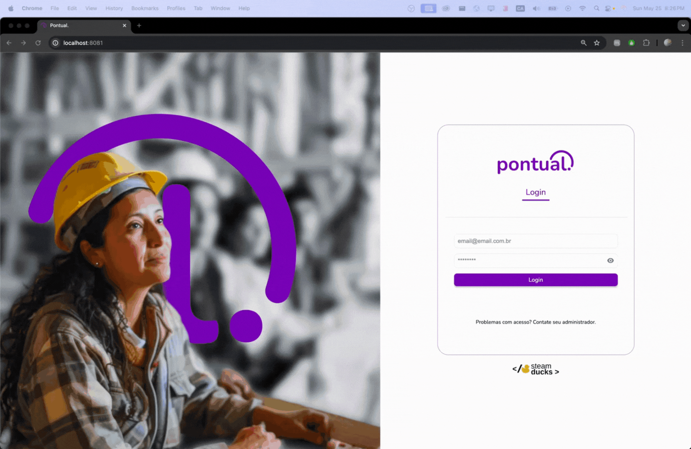
No primeiro semestre de 2025, desenvolvemos o Pontual, uma aplicação web criada para monitorar as horas trabalhadas de funcionários de empresas terceirizadas. O projeto foi desenvolvido para a Altave, empresa que atua com coleta de imagens e reconhecimento facial e que hoje aplica essa tecnologia em contextos de segurança, como plataformas petrolíferas.
O cenário apresentado pelo cliente envolvia um estaleiro, onde empresas terceiras realizam manutenção em navios. As câmeras da Altave identificam os colaboradores e enviam essas informações para o sistema, que registra os pontos, calcula as horas trabalhadas e gera o valor do salário individualmente. A partir disso, construímos uma interface para cadastro de empresas e profissionais, filtros de dados, extração de relatórios e dashboards interativos.
Neste semestre, a equipe Steam Ducks teve oito integrantes (Alexander Silva, Carlos Daniel, Felipe Reis, Isabelly Sousa, Lucas Acosta, Rafaella Cruz, Samuel Prado e eu), organizados segundo o Scrum. Meu papel na equipe foi o de desenvolvedor.
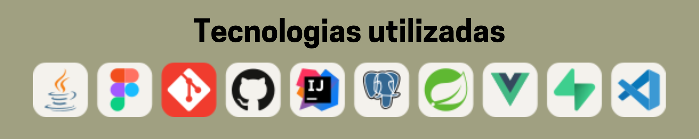
Como desenvolvedor full stack, contribuí com a estruturação do frontend em Vue.js, a integração com a API, o desenvolvimento de classes e serviços no backend e a construção da folha de ponto. Um dos principais desafios foi lidar com funcionários em escalas noturnas e permitir a edição das marcações já registradas.
Minha primeira contribuição foi a estruturação inicial do projeto no frontend, ainda nas primeiras sprints. Organizei a arquitetura de pastas, defini as rotas da aplicação e estabeleci padrões de código para garantir consistência entre os módulos, além de desenvolver os layouts principais e os componentes reutilizáveis da interface. Esse trabalho de base ajudou a manter uma experiência visual coerente entre as telas e reduziu o tempo de desenvolvimento das funcionalidades implementadas pelos colegas nas sprints seguintes.
Com a estrutura pronta, implementei a comunicação entre o frontend e a API, garantindo o consumo dos endpoints responsáveis pela exibição e pela manipulação dos dados. Esse trabalho envolveu tratar formatos de data, padronizar as chamadas e centralizar a lógica de acesso aos serviços. Também configurei interceptadores de requisição e resposta para gerenciar automaticamente os tokens de autenticação e lidar com erros de forma centralizada, o que tornou o fluxo de dados mais robusto e fácil de manter ao longo do desenvolvimento.
No backend, desenvolvi classes e serviços responsáveis por organizar a lógica de negócio e facilitar a comunicação entre os módulos da aplicação, estruturando os services de forma modular para promover a reutilização de código e a separação de responsabilidades. Também integrei o projeto ao Supabase, configurando a conexão com o banco PostgreSQL e o armazenamento das fotos dos funcionários.
EXEMPLO VISUAL
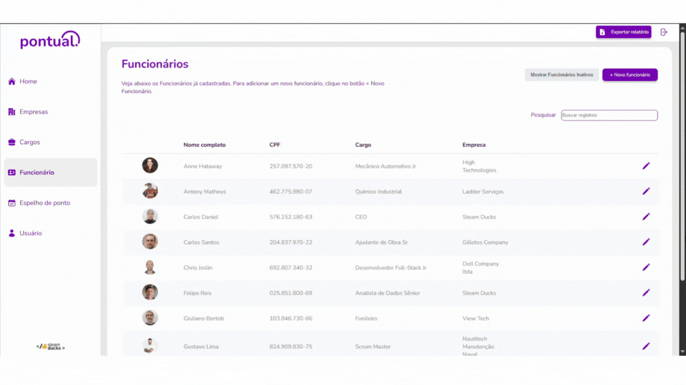
A entrega mais desafiadora foi a folha de ponto. Desenvolvi a lógica responsável pelo cálculo e pela exibição dos pontos na interface, processando os dados de entrada, calculando as horas trabalhadas e apresentando os resultados ao usuário em tempo real. A funcionalidade parecia simples no início, mas as escalas noturnas geravam marcações que atravessavam a meia-noite, e o cálculo precisava tratar diferentes combinações de entradas e saídas no mesmo dia, além de permitir a edição de registros já existentes.
EXEMPLO VISUAL
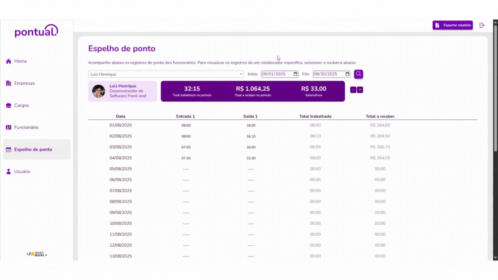
O desenvolvimento do Pontual foi meu primeiro contato mais aprofundado com a construção de uma aplicação web utilizando Vue.js. Mais do que desenvolver telas individualmente, precisei entender como estruturar um frontend de médio porte para que diferentes páginas, rotas e componentes pudessem funcionar de maneira organizada e consistente.
A necessidade de trabalhar com diferentes módulos me levou a pensar em arquitetura de frontend, organização de pastas, rotas, layouts e componentes reutilizáveis. Comecei a perceber que, conforme uma aplicação cresce, simplesmente adicionar novas telas pode gerar complexidade e retrabalho se não houver uma estrutura definida desde o início.
Disso resultou uma visão mais madura sobre frontend. Passei a considerar não apenas a aparência ou o funcionamento individual de uma tela, mas também como os componentes se relacionam, como o usuário navega pela aplicação e como a estrutura escolhida pode facilitar a manutenção e a evolução do sistema.
Competências desenvolvidas: Vue.js (intermediário) · JavaScript (intermediário) · Arquitetura de frontend (básico/intermediário) · Componentização e reutilização de código (intermediário) · Git e GitHub (intermediário).
Uma das principais evoluções técnicas deste semestre foi aprender a trabalhar com a comunicação entre frontend e backend. Até então, minha experiência estava mais concentrada na lógica e na construção de aplicações menores. No Pontual, precisei consumir uma API real e transformar os dados recebidos em informações úteis para as telas da aplicação.
Esse processo envolveu lidar com requisições, respostas, autenticação, formatos de data e tratamento de erros. Também precisei organizar a comunicação com os serviços de maneira centralizada, utilizando interceptadores para lidar com tokens e situações de erro de forma mais consistente.
Essa experiência mudou minha compreensão sobre aplicações web porque comecei a enxergar o sistema como um conjunto de camadas que precisam se comunicar corretamente.
Competências desenvolvidas: Consumo de APIs REST (intermediário) · Integração frontend/backend (intermediário) · Autenticação e tokens (básico/intermediário).
No backend, tive contato mais aprofundado com Java e Spring Boot, trabalhando com controllers, services e organização da lógica de negócio. Essa experiência foi importante porque me permitiu sair de uma visão limitada ao consumo de APIs e começar a compreender também o que acontece por trás das requisições realizadas pelo frontend.
Ao desenvolver classes e serviços, comecei a aplicar conceitos de separação de responsabilidades e modularização. A lógica precisava estar organizada de forma que diferentes partes do sistema pudessem ser mantidas e modificadas sem concentrar todo o comportamento em um único ponto.
Também tive contato com tratamento de exceções e diferentes respostas HTTP, entendendo melhor como o backend deve comunicar erros e resultados para quem está consumindo a API. Essa experiência contribuiu para desenvolver uma visão mais completa do ciclo de uma requisição, desde a interação do usuário até o processamento e persistência dos dados.
Competências desenvolvidas: Java (básico/intermediário) · Spring Boot (básico/intermediário).
O projeto também ampliou meu contato com bancos de dados relacionais. Trabalhei com PostgreSQL através do Supabase, participando da integração entre a aplicação e a camada responsável pela persistência das informações.
A necessidade de consultar funcionários, registros de ponto e outras informações do sistema me ajudou a compreender melhor como os dados utilizados pela interface são armazenados e recuperados. Também comecei a perceber a importância de estruturar as consultas de acordo com a necessidade real da aplicação, principalmente quando os dados precisam ser filtrados, agrupados ou processados antes de serem apresentados ao usuário.
Foi o que consolidou minha compreensão sobre o caminho dos dados dentro de uma aplicação: o usuário gera uma ação, o frontend realiza uma requisição, o backend processa a regra de negócio, o banco fornece ou armazena os dados e o resultado retorna para a interface.
Competências desenvolvidas: PostgreSQL (básico/intermediário) · Supabase (básico/intermediário).
O desenvolvimento da folha de ponto foi uma das experiências mais importantes do projeto para minha evolução técnica. A funcionalidade envolvia regras específicas para calcular horas trabalhadas e apresentar os registros corretamente, principalmente em situações em que a jornada de trabalho atravessava a meia-noite.
Para resolver esse tipo de cenário, precisei analisar os dados recebidos, entender como os horários deveriam ser interpretados e estruturar a lógica de cálculo de maneira que diferentes combinações de marcações fossem tratadas corretamente. Isso exigiu mais atenção aos casos de borda e mostrou, na prática, como uma regra de negócio aparentemente simples pode gerar desafios técnicos quando aplicada a situações reais.
Essa experiência fortaleceu minha capacidade de transformar uma necessidade do negócio em uma implementação técnica. Além de escrever funções para calcular horários, precisei compreender qual comportamento o sistema deveria apresentar em cada cenário e garantir que essa regra fosse refletida corretamente no código.
Competências desenvolvidas: Regras de negócio (básico/intermediário) · Manipulação e cálculo de datas e horários (básico/intermediário).
A estruturação inicial do frontend foi a contribuição que mais exigiu colaboração. Como as rotas, os layouts e os componentes que eu criava seriam usados por todos os colegas nas telas seguintes, precisei alinhar com o time os padrões de código antes de defini-los e ajustar a estrutura quando alguém encontrava uma limitação.
Também auxiliei colegas durante o desenvolvimento, discutindo soluções, revisando abordagens e ajudando a resolver problemas encontrados ao longo das sprints, principalmente na integração das telas com os serviços da API. Isso me mostrou que ajudar outra pessoa a encontrar uma solução pode ser tão importante quanto concluir a própria tarefa.
Levo dessa vivência a capacidade de colaborar tecnicamente sem perder de vista o objetivo coletivo, algo especialmente importante em projetos nos quais diferentes pessoas trabalham simultaneamente sobre partes relacionadas do sistema.
A folha de ponto foi o problema mais próximo de uma aplicação real que eu havia enfrentado até então. Quando as primeiras marcações de funcionários em escala noturna apareceram, o cálculo de horas apresentava resultados incorretos, porque a saída acontecia em um dia diferente da entrada. A solução não poderia considerar apenas o cenário mais simples; era necessário analisar as diferentes combinações de marcações e garantir que os cálculos permanecessem corretos em todas elas.
Para resolver, precisei dividir a situação em partes menores, listar os casos que poderiam gerar inconsistências e testar cada um deles antes de chegar a uma implementação adequada. Comecei a desenvolver uma abordagem mais sistemática para problemas técnicos, em vez de tentar resolver tudo diretamente no código.
Essa experiência fortaleceu principalmente minha capacidade analítica. Passei a entender melhor que problemas complexos normalmente precisam ser decompostos antes de serem implementados e que considerar casos de borda faz parte da construção de uma solução confiável.
A participação nas discussões de planejamento e brainstorming me ajudou a desenvolver uma postura mais preventiva. Ao discutir as telas e os fluxos da folha de ponto antes da implementação, o time conseguiu antecipar cenários como a edição de marcações já registradas, o que evitou retrabalho nas etapas seguintes.
Nas funcionalidades com regras mais complexas, pensar previamente sobre os cenários de uso facilitou a divisão das tarefas e a definição de uma solução mais consistente.
Essa experiência me ensinou a valorizar mais o planejamento técnico. Nem todo problema precisa ser resolvido durante a codificação; muitas vezes, entender corretamente o problema antes de começar a implementar já reduz uma parte significativa da complexidade.
O maior salto de maturidade deste semestre foi começar a desenvolver uma visão sistêmica sobre uma aplicação. Ao configurar os interceptadores de autenticação e integrar o frontend à API, percebi que uma tela funcionando não dependia apenas do que eu havia escrito no Vue: dependia da disponibilidade da API, do formato em que o backend devolvia as datas e de como o token era tratado em cada requisição.
Uma alteração em uma camada poderia afetar outra. Um dado retornado de forma diferente pela API poderia exigir mudanças no frontend, enquanto uma regra de negócio mal definida poderia comprometer tanto o processamento quanto a apresentação das informações.
Essa visão foi importante para minha evolução porque comecei a deixar de enxergar desenvolvimento apenas como a implementação de funcionalidades isoladas. Passei a compreender melhor que uma aplicação é um conjunto de componentes interdependentes e que uma boa solução precisa considerar essas relações.
4º SEMESTRE · 2/2025
Aplicação web full stack desenvolvida para monitorar indicadores de mobilidade urbana, classificar regiões por níveis de tráfego e apoiar a gestão de alertas e protocolos de ação.
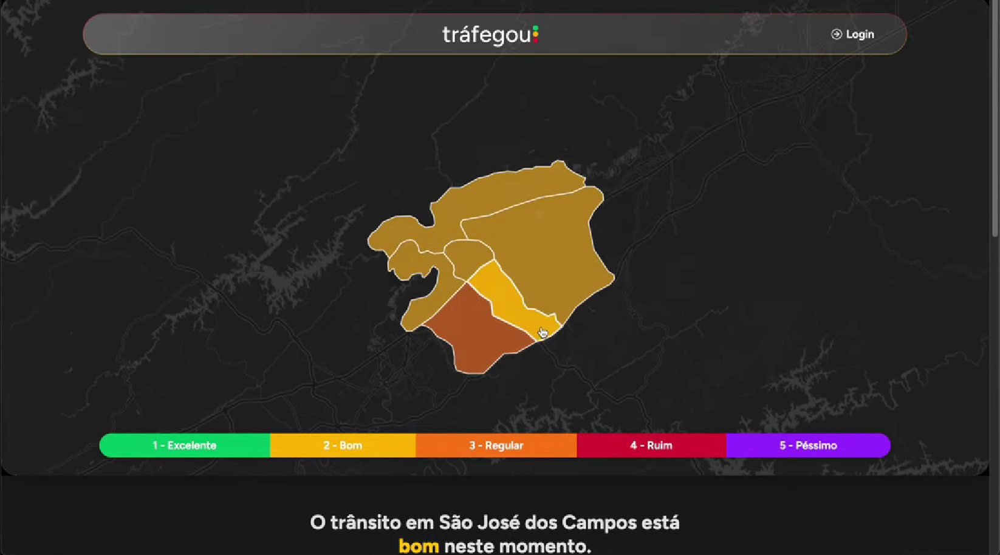
No segundo semestre de 2025, desenvolvemos o projeto Tráfegou - Monitoramento de Tráfego Inteligente, uma aplicação web criada para apoiar o monitoramento contínuo da mobilidade urbana. O desafio partiu de uma necessidade da Prefeitura de São José dos Campos, e o sistema foi pensado para consolidar indicadores de tráfego por região, atribuir níveis de monitoramento, gerar alertas automáticos vinculados a protocolos de ação e registrar as providências tomadas pelos gestores, apoiando a tomada de decisão.
A solução foi construída com arquitetura full stack, utilizando Vue.js 3 com TypeScript no frontend, Spring Boot com Java 17 no backend e integração com banco de dados relacional. O projeto também contou com mapas interativos, dashboards, autenticação e processamento contínuo de dados.
A equipe Steam Ducks manteve os mesmos oito integrantes do semestre anterior, organizados segundo o Scrum. Meu papel na equipe foi o de desenvolvedor.
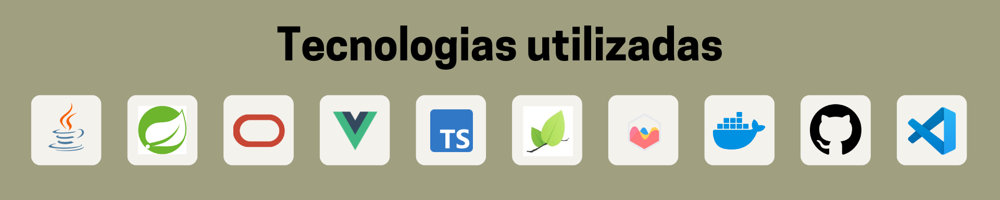
Atuei como desenvolvedor full stack, contribuindo tanto na construção de telas e fluxos do frontend quanto na implementação de autenticação, segurança, controllers, integrações e persistência no backend. Minha participação se concentrou principalmente em autenticação de usuários, dashboard administrativo, CRUD de usuários e cargos, configuração de segurança da API, ingestão e tratamento de dados e integração entre as camadas do sistema.
A primeira entrega de que participei foi a autenticação e o fluxo de acesso. No frontend, criei a página de login, a lógica de autenticação e o fluxo de logout; no backend, configurei a segurança da API com Spring Security e JWT, protegendo os endpoints administrativos por perfil e resolvendo os conflitos de acesso que surgiram quando outras partes do sistema passaram a depender dessa configuração.
Em seguida, atuei na área administrativa do sistema. No frontend, criei a página de administração, configurei o grid do dashboard e desenvolvi os componentes de gestão de usuários, cargos e mensagens; no backend, complementei essa entrega com os recursos de listagem, cadastro e edição de usuários e papéis, incluindo validações de dados e tratamento de conflitos de cadastro, como nomes de usuário duplicados e telefones em formato inválido.
EXEMPLO VISUAL
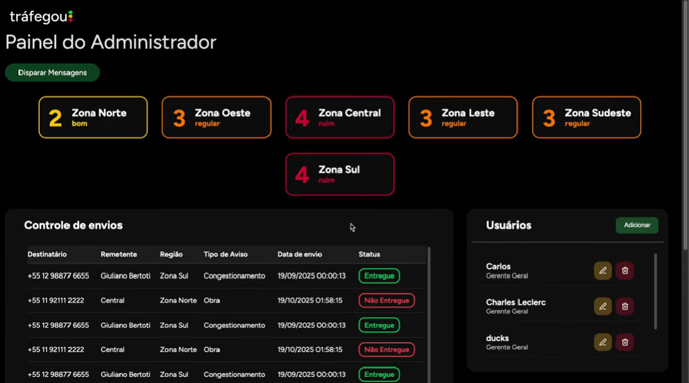
Outra contribuição importante foi a integração entre frontend e backend para os indicadores de tráfego. No frontend, trabalhei nos serviços que buscam os níveis das zonas monitoradas e ajustei a interface para refletir corretamente os dados processados; no backend, contribuí com os endpoints e com a lógica que calcula e persiste os indicadores regionais, cruzando os dados das câmeras de cada região com as condições climáticas mais recentes.
EXEMPLO VISUAL
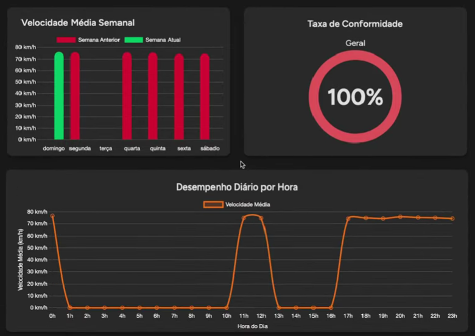
Por fim, contribuí com a persistência e o tratamento dos dados recebidos pelo sistema: o salvamento dos registros, a organização das tabelas e os ajustes nas estruturas usadas pelos indicadores e alertas. A parte mais relevante dessa frente foi a rotina de importação agendada, que a cada dois minutos busca os registros de velocidade, recalcula os indicadores regionais e persiste o nível de cada região, garantindo que os dashboards apresentem sempre informações atualizadas sem depender de uma ação do usuário.
O Tráfegou foi um dos projetos em que mais ampliei minha experiência como desenvolvedor full stack. Diferentemente dos projetos anteriores, em que minha atuação estava mais concentrada em partes específicas da aplicação, neste projeto trabalhei tanto no frontend quanto no backend, precisando compreender como as diferentes camadas se conectavam para entregar uma funcionalidade completa.
No frontend, trabalhei com Vue.js 3 e TypeScript, enquanto no backend utilizei Java 17 e Spring Boot. Essa combinação me obrigou a pensar além da implementação de uma tela ou de um endpoint isolado. Era necessário entender o fluxo completo dos dados, desde a interação do usuário até o processamento da informação no backend e sua persistência.
Essa experiência consolidou uma visão mais prática de arquitetura full stack. Passei a compreender melhor a responsabilidade de cada camada e a importância de manter uma comunicação consistente entre interface, serviços, regras de negócio e banco de dados.
Competências desenvolvidas: Desenvolvimento Full Stack (intermediário) · Vue.js 3 (intermediário) · TypeScript (intermediário) · Java 17 (intermediário) · Spring Boot (intermediário) · Git e GitHub (intermediário).
A implementação do fluxo de autenticação foi também um avanço importante na minha experiência técnica. Trabalhei desde a criação da tela de login e do fluxo de logout no frontend até a configuração da segurança da API no backend, incluindo autenticação baseada em JWT, proteção de endpoints e controle de acesso por perfil.
Esse processo me fez compreender que autenticação não se resume a verificar usuário e senha. Uma aplicação precisa controlar o ciclo completo de acesso: identificar o usuário, manter sua sessão de forma adequada, proteger recursos e garantir que determinadas operações estejam disponíveis apenas para os perfis autorizados.
Também tive contato com conceitos como BCrypt, filtros de autenticação, permissões por role e respostas HTTP relacionadas a acesso. Desde então, procuro tratar segurança como uma parte estrutural da aplicação, e não como uma funcionalidade adicional implementada depois.
Competências desenvolvidas: Autenticação e autorização (básico/intermediário) · JWT (básico/intermediário) · Spring Security (básico/intermediário).
O projeto aprofundou minha experiência com APIs REST e com a integração entre diferentes componentes de uma aplicação. Ao desenvolver serviços no frontend e endpoints no backend, precisei garantir que os dados fossem enviados, processados e retornados no formato esperado por cada camada.
Trabalhar com indicadores de tráfego foi especialmente importante nesse sentido. Os dados precisavam passar por diferentes etapas de processamento antes de serem apresentados na interface, e o frontend precisava interpretar corretamente essas informações para alimentar dashboards, indicadores e outras visualizações.
Essa experiência me ajudou a compreender melhor conceitos como contratos de API, DTOs, tratamento de respostas, serialização de dados e separação entre responsabilidades. Também desenvolvi uma maior atenção aos efeitos que uma alteração em um endpoint pode causar nas demais camadas do sistema.
Competências desenvolvidas: APIs REST (intermediário) · Integração frontend/backend (intermediário).
Outra evolução importante foi o contato com fluxos de processamento automatizado de dados. O Tráfegou precisava receber registros de velocidade, processar essas informações, calcular indicadores regionais e atualizar os níveis de cada região de forma periódica.
Trabalhar com uma rotina agendada me fez pensar na aplicação para além das ações realizadas diretamente pelo usuário. O sistema também precisava executar processos em segundo plano, respeitando uma sequência de operações.
Esse aprendizado ampliou minha compreensão sobre sistemas que dependem de pipelines de processamento, tarefas agendadas e persistência contínua. Passei a perceber melhor como aplicações podem combinar interações em tempo real com processos automatizados responsáveis por manter o estado do sistema atualizado.
Competências desenvolvidas: Processamento e transformação de dados (intermediário) · Rotinas agendadas e automação (básico/intermediário).
O projeto também aprofundou meu contato com a camada de persistência. Trabalhei com entidades, relacionamentos e consultas responsáveis por recuperar informações de regiões, câmeras, indicadores e níveis de tráfego.
Um dos principais aprendizados foi entender que os dados apresentados na interface nem sempre existem no banco exatamente na forma em que o usuário precisa visualizá-los. Em alguns casos, foi necessário combinar informações de diferentes fontes, realizar cálculos e transformar os resultados antes de retorná-los para o frontend.
Essa experiência fortaleceu minha capacidade de trabalhar com dados como parte de uma regra de negócio, e não apenas como registros armazenados. Passei a considerar mais cuidadosamente como as informações são persistidas, recuperadas, transformadas e finalmente utilizadas pela aplicação.
Competências desenvolvidas: PostgreSQL e persistência de dados (intermediário) · JPA / Hibernate (básico/intermediário).
A principal habilidade desenvolvida neste projeto foi minha visão sistêmica, e a autenticação foi o que a tornou evidente. Quando alterei a configuração de segurança da API para proteger os endpoints administrativos, telas que já funcionavam passaram a receber erros de acesso, porque os serviços do frontend não enviavam o token da forma esperada. Uma mudança em uma camada comprometeu o funcionamento de outra, e resolver isso exigiu olhar para o fluxo inteiro.
O mesmo aconteceu com os indicadores: uma alteração na estrutura dos dados devolvidos pelo backend exigia ajustes nos serviços do frontend e na forma como o dashboard apresentava as regiões. Passei a considerar com mais frequência essas dependências antes de implementar ou alterar uma funcionalidade.
Na prática, comecei a pensar menos em "qual código preciso escrever?" e mais em "qual é o fluxo completo que precisa funcionar?".
Os conflitos de acesso que apareceram depois da configuração da segurança foram o melhor exemplo de como este projeto exigiu uma evolução na minha capacidade de investigar e resolver problemas. O erro aparecia na tela, mas a causa podia estar no filtro JWT, na configuração das rotas protegidas, no serviço do frontend ou na forma como o token era armazenado.
Em vez de considerar apenas o ponto em que o erro aparecia, comecei a analisar o caminho percorrido pela informação para identificar onde o comportamento esperado havia sido interrompido. Essa forma de investigação também foi importante quando os indicadores regionais não correspondiam aos dados das câmeras e a causa estava na consulta que agregava as velocidades médias.
Essa experiência contribuiu para desenvolver uma postura mais analítica diante de problemas técnicos e para trabalhar com mais autonomia quando uma solução não era imediatamente evidente.
Como a autenticação e os endpoints de indicadores eram consumidos por telas desenvolvidas por outros integrantes, meu trabalho dependia de interfaces bem definidas entre as partes do sistema. Em diferentes momentos, precisei alinhar com os colegas o formato das respostas dos endpoints, as estruturas de dados e o comportamento esperado das telas antes de implementar.
Também tive oportunidades de auxiliar colegas em questões técnicas e discutir alternativas para implementação. Isso me ajudou a perceber que colaboração em desenvolvimento não significa apenas dividir tarefas, mas também compartilhar contexto e conhecimento para reduzir bloqueios e manter o sistema integrado.
Perceber que o meu trabalho servia de base para o de outras pessoas também mudou meu cuidado com a comunicação: avisar sobre a mudança no contrato de um endpoint ou documentar um comportamento passou a fazer parte da entrega, e não a ser um detalhe opcional.
A configuração do Spring Security e a rotina agendada de importação foram partes do sistema com as quais eu não tinha familiaridade, e não havia uma solução pronta no time. Precisei estudar a documentação, testar alternativas e chegar a uma implementação que pudesse ser integrada ao trabalho do restante da equipe.
Essa experiência mudou minha relação com as tarefas técnicas. Em projetos anteriores, eu ainda estava muito concentrado em aprender a implementar aquilo que havia sido definido. No Tráfegou, comecei a assumir mais responsabilidade pelo resultado da funcionalidade e pelo impacto que minha implementação teria nas outras partes da aplicação.
Foi um passo importante para desenvolver uma postura mais próxima da realidade profissional, em que o desenvolvedor precisa ter autonomia para investigar, tomar decisões técnicas e assumir responsabilidade pela entrega.
5º SEMESTRE · 1/2026 · CLIENTE: SIATT
Solução analítica desenvolvida para a SIATT, com Data Warehouse que integra dados de ERP e PLM para consolidar custos de materiais e horas técnicas por projeto e programa, apoiando o acompanhamento orçamentário e a tomada de decisão.
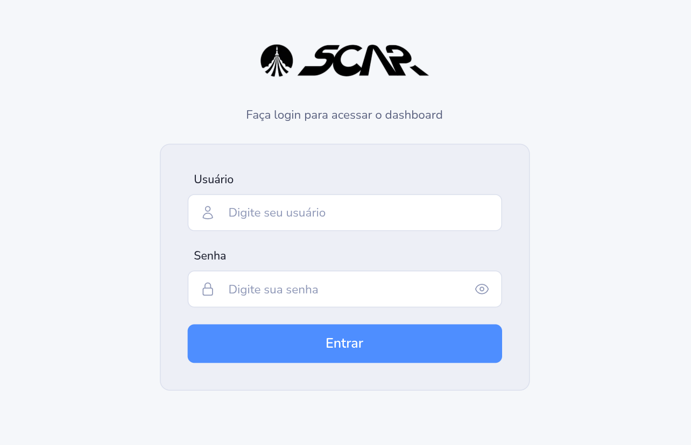
No primeiro semestre de 2026, desenvolvemos o SCAR (Sistema de Controle e Autonomia de Recursos), uma solução analítica criada para a SIATT, empresa brasileira do setor de defesa especializada em sistemas de mísseis inteligentes, sistemas embarcados críticos e integração de alta tecnologia para aplicações militares. Por se tratar de um ambiente de alta segurança, o projeto exigiu atenção especial a controle de acesso, rastreabilidade e documentação formal das decisões técnicas.
O problema apresentado pelo cliente era a fragmentação dos dados de compras, consumo de materiais, estoque, tarefas e horas trabalhadas entre o ERP e o PLM, o que impedia enxergar o custo real de cada projeto e programa. A proposta foi projetar e implementar um Data Warehouse, com modelagem dimensional em estrela/snowflake, capaz de consolidar materiais e horas técnicas em uma base histórica única, viabilizando análises multidimensionais, indicadores de saúde financeira e comparação entre custo real e budget. A solução foi construída com Python e Django no backend e Vue.js com TypeScript no frontend.
Neste semestre também fomos orientados a incorporar práticas de DevOps ao projeto, distribuindo entre os integrantes as diferentes frentes dessa cultura, como integração contínua, testes, análise estática e rastreabilidade de requisitos.
A equipe Steam Ducks teve oito integrantes (Alexander Silva, Carlos Daniel, Felipe Reis, Isabelly Sousa, Mariana Oliveira, Rafaella Cruz, Samuel Prado e eu), organizados segundo o Scrum. Meu papel na equipe foi o de Product Owner e, na distribuição das frentes de DevOps, fiquei responsável pela de rastreabilidade de requisitos.
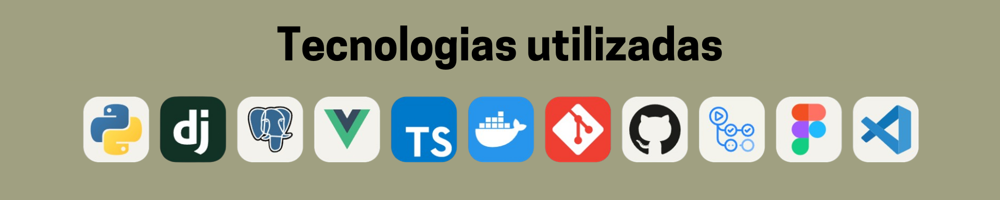
Como Product Owner, fui a ponte entre o cliente e o time de desenvolvimento durante todo o semestre. Isso se traduziu em conduzir o levantamento de requisitos com o stakeholder, especificar as telas e os perfis de acesso, escrever o product backlog em epics e user stories com critérios de aceitação, DoR, DoD e casos de teste, quebrar as histórias em tasks por sprint e estruturar a rastreabilidade de requisitos no Jira.
O trabalho começou pelo levantamento de requisitos junto ao parceiro da SIATT, traduzindo um cenário de negócio complexo em um escopo viável para o semestre. Documentei o contexto da empresa, o problema estratégico da fragmentação de dados entre ERP e PLM e as perguntas de negócio que a solução precisava responder, como o custo consolidado por projeto, o desvio percentual em relação ao budget e quais projetos apresentavam risco de estouro.
Ao longo do desenvolvimento, mantive um canal contínuo de perguntas ao cliente para eliminar ambiguidades antes que chegassem ao time, definindo pontos críticos como a fórmula oficial de "custo real", o menor nível de detalhe necessário nas análises, o tratamento de hierarquias entre programa e projeto e a política de moeda. Essas definições foram registradas como regras de negócio de cada indicador, para que o time tivesse uma referência única sobre o que cada número deveria representar. Um momento importante dessa atuação foi negociar com o stakeholder a inclusão do tema de orçamento e saúde financeira apenas na segunda sprint, protegendo o ciclo de desenvolvimento que já estava em andamento sem perder uma necessidade relevante do negócio.
EXEMPLO VISUAL
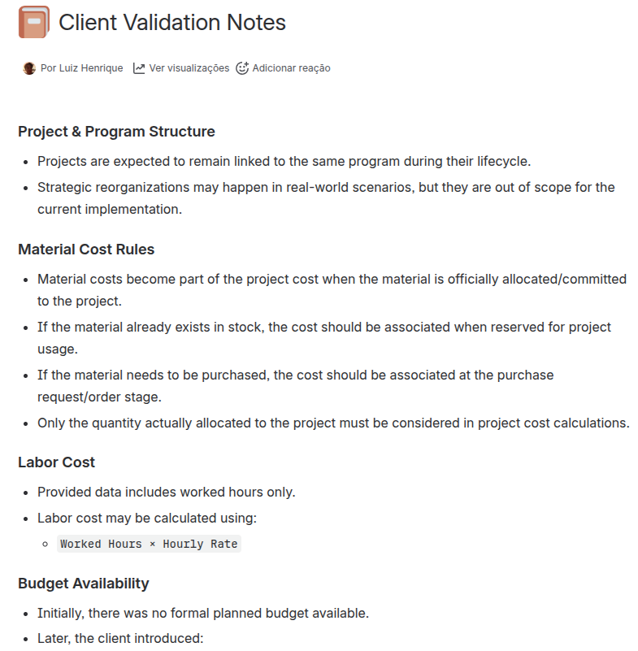
Também fui responsável por especificar as telas da aplicação e entregar ao time a referência visual do produto. Para cada tela documentei o objetivo, os elementos esperados, os filtros disponíveis e, no caso dos dashboards, o detalhamento de cada gráfico: tipo de visualização, métrica exibida, comparação realizada e a pergunta de negócio que ele deveria responder. Junto com as telas, defini a matriz de perfis de acesso: como o sistema seria utilizado por áreas diferentes (Super Admin, Financeiro, Compras, Almoxarifado e Projetos), mapeei tela a tela o que cada perfil poderia visualizar e quais indicadores ficariam restritos, um recorte especialmente sensível no contexto da SIATT, onde informação financeira consolidada e dados de projetos estratégicos não devem circular indistintamente.
TRECHO DA ESPECIFICAÇÃO (TELA 2: DASHBOARD PRINCIPAL)
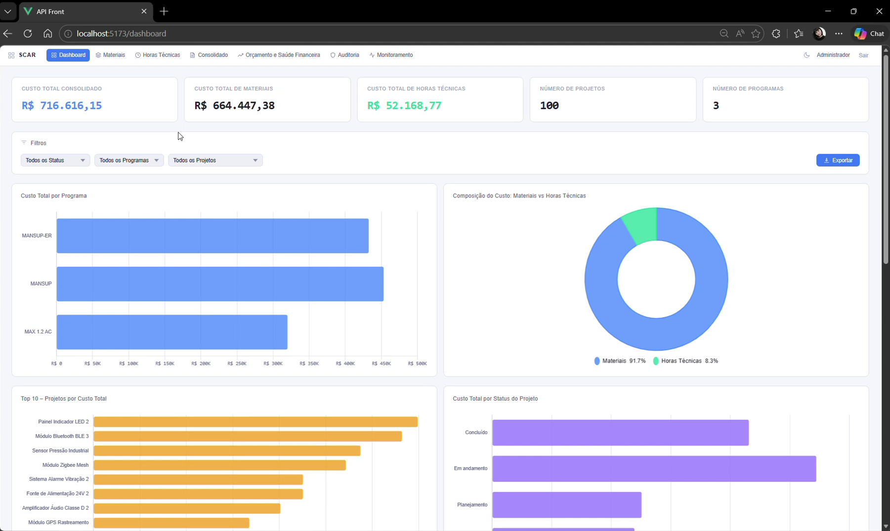
Com os requisitos e as telas definidos, escrevi o product backlog completo do projeto, organizado em dez epics que cobriam desde acesso e controle até orçamento, saúde financeira e ingestão de dados. Cada user story foi documentada com descrição funcional, critérios de aceitação, Definition of Ready, Definition of Done, casos de teste e referência visual, de forma que o time pudesse iniciar o desenvolvimento sem depender de interpretação. A cada sprint, quebrei as histórias em tasks e as distribuí entre os integrantes, acompanhando o que era necessário no backend, no frontend e na camada de dados para que cada história fosse concluída, o que ajudou a manter o ritmo das sprints previsível e a tornar visível a dependência entre as tarefas de ingestão de dados e as de interface.
TRECHO DO BACKLOG (USER STORY 01: AUTENTICAR NO SISTEMA)
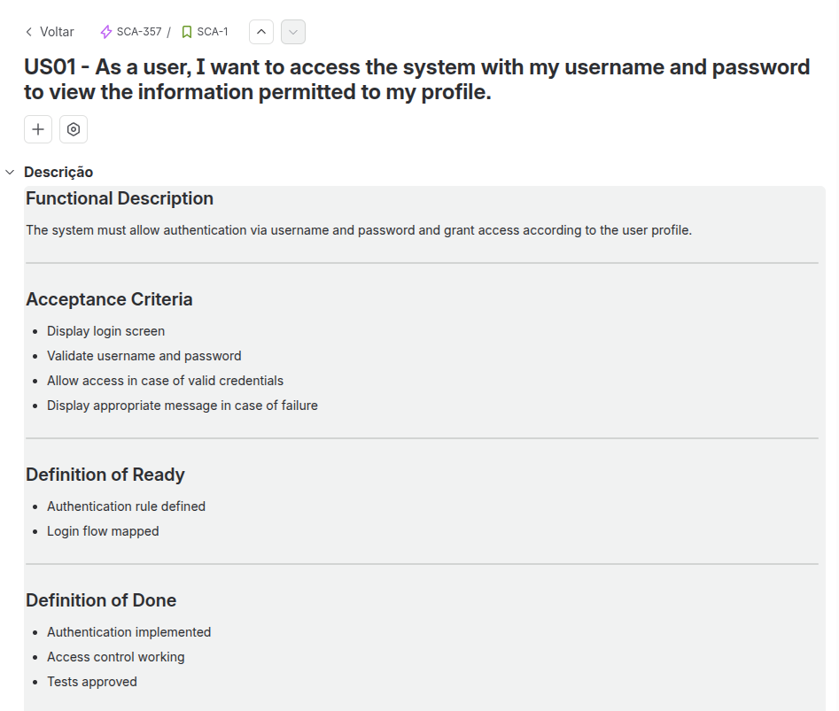
Dentro da distribuição das frentes de DevOps entre os integrantes, fiquei responsável pela de rastreabilidade de requisitos. Essa frente era necessária porque o SCAR atendia um cliente do setor de defesa, que exige auditabilidade sobre o que é construído, e concentrava um volume grande de requisitos espalhados entre os documentos de levantamento, o backlog e o repositório: sem um mecanismo de rastreabilidade, não haveria como garantir que nenhum requisito se perdesse ao longo do desenvolvimento, nem como responder onde cada necessidade do negócio estava sendo atendida.
Como era preciso dar essa garantia, estruturei toda a rastreabilidade no Jira: escrevi todos os requisitos do sistema e atribuí uma tag a cada um deles; essa tag era referenciada pelos Epics, que estavam conectados às User Stories, e cada história se desdobrava nas Tasks executadas pelo time nas sprints. Conectamos ainda o Jira ao repositório do projeto, o strategic-cost-analytics, de forma que commits e branches ficassem vinculados às tasks correspondentes, fechando o ciclo entre o requisito de negócio e o código efetivamente entregue.
Cadeia de rastreabilidade adotada:
Requisito (com tag)
└── Epic (referencia a tag do requisito)
└── User Story (critérios de aceitação, DoR, DoD, casos de teste)
└── Task (executada na sprint)
└── Branch / commit no repositório GitHub
strategic-cost-analyticsUSER STORY E TASKS VINCULADAS AO REQUISITO FR02 NO JIRA
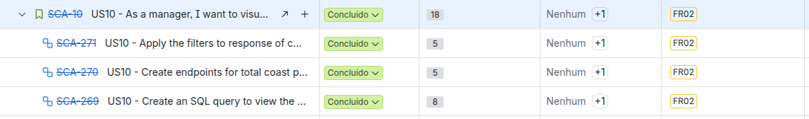
O SCAR representou uma evolução importante na minha experiência como Product Owner. Nos projetos anteriores, eu já havia tido contato com a organização de produto, documentação e acompanhamento de sprints. Neste semestre, porém, passei a lidar diretamente com um cliente e com um problema de negócio mais complexo, o que exigiu uma atuação mais estruturada na definição do produto.
Precisei transformar conversas com o stakeholder em requisitos concretos, identificar ambiguidades, validar definições e estabelecer o que realmente precisava ser entregue dentro do semestre. Isso envolveu não apenas escrever histórias, mas compreender o problema antes de transformá-lo em especificação.
A experiência aprofundou minha compreensão sobre engenharia de requisitos, priorização, critérios de aceitação e gestão de escopo. Também passei a entender melhor o Product Owner como alguém responsável por reduzir a distância entre a necessidade do negócio e aquilo que o time efetivamente consegue construir.
Competências desenvolvidas: Product Owner (avançado) · Engenharia de requisitos (avançado) · Levantamento de requisitos com stakeholders (avançado) · Product Backlog e User Stories (avançado) · Critérios de aceitação, DoR e DoD (avançado) · Gestão de escopo e priorização (intermediário/avançado).
Ser Product Owner de um produto analítico exigiu que eu entendesse o que é um Data Warehouse o suficiente para especificá-lo. O problema do cliente não era somente armazenar dados, mas consolidar informações de sistemas diferentes para permitir análises confiáveis sobre custos, materiais, horas técnicas e orçamento, e as histórias que eu escrevia precisavam refletir isso.
Para conversar com o time sobre o que cada indicador deveria mostrar, precisei compreender conceitos como tabelas fato, dimensões e nível de detalhe das análises. Mais importante do que conhecer esses conceitos foi entender como eles afetavam diretamente os indicadores que seriam apresentados ao usuário e, portanto, os critérios de aceitação das histórias.
Um dos principais aprendizados foi perceber que a qualidade de um dashboard começa muito antes da camada visual: se uma regra de negócio não estiver bem definida ou se duas fontes forem somadas de maneira inadequada, o indicador final pode parecer correto e ainda assim representar um número incorreto. Passei a enxergar o Data Warehouse como uma camada de tradução entre os dados operacionais e as perguntas de negócio que a empresa precisa responder.
Competências desenvolvidas: Conceitos de Data Warehouse (intermediário).
O SCAR também aprofundou minha experiência na transformação de conceitos de negócio em regras computáveis. Termos como custo real, budget, desvio percentual e saúde financeira precisavam deixar de ser apenas conceitos discutidos com o cliente e se tornar regras objetivas que pudessem ser implementadas e reproduzidas pelo sistema.
Para isso, precisei validar com o stakeholder exatamente o que cada indicador deveria representar, qual fonte deveria ser utilizada e quais exceções deveriam ser consideradas. Esse processo mostrou que pequenas ambiguidades em uma definição de negócio podem gerar grandes diferenças na implementação.
Desenvolvi, portanto, uma capacidade maior de questionar definições, identificar premissas e transformar conceitos abstratos em regras mensuráveis. Esse aprendizado foi especialmente relevante porque a solução tinha como objetivo apoiar decisões financeiras e, consequentemente, os números apresentados precisavam possuir uma definição clara e rastreável.
Competências desenvolvidas: Regras de negócio e indicadores (intermediário/avançado).
Especificar as telas do SCAR me ensinou a descrever uma interface sem desenhá-la: para cada tela, o objetivo, os elementos, os filtros e, nos dashboards, o detalhamento de cada gráfico, com a métrica, a comparação e a pergunta de negócio que ele responde. Essa forma de especificar deu ao time uma referência clara e evitou que decisões de produto fossem tomadas durante a implementação.
A definição da matriz de perfis de acesso complementou esse trabalho. Mapear o que Super Admin, Financeiro, Compras, Almoxarifado e Projetos podem ver em cada tela me fez tratar controle de acesso como requisito de produto, e não apenas como detalhe técnico, algo especialmente importante em um cliente do setor de defesa.
Competências desenvolvidas: Especificação de telas e perfis de acesso (intermediário/avançado) · Dashboards e indicadores de negócio (intermediário/avançado).
Outro avanço relevante foi meu contato com DevOps por meio da rastreabilidade de requisitos. Fiquei responsável por essa frente e precisei estruturar uma relação clara entre aquilo que havia sido solicitado pelo cliente e aquilo que efetivamente chegava ao código.
A cadeia formada por requisito, epic, user story, task e branch ou commit me mostrou que rastreabilidade não é apenas uma atividade administrativa. Ela permite responder perguntas importantes sobre o desenvolvimento: de onde veio determinada funcionalidade, qual necessidade ela atende, quem trabalhou nela e onde essa implementação pode ser encontrada.
Essa experiência também mudou minha percepção sobre DevOps. Passei a enxergar a disciplina de forma mais ampla, não apenas como infraestrutura ou deploy, mas como um conjunto de práticas que ajudam a conectar planejamento, desenvolvimento, qualidade, rastreabilidade e entrega.
Competências desenvolvidas: Rastreabilidade de requisitos (avançado) · Jira (avançado) · Integração Jira e GitHub (intermediário).
A comunicação com o cliente foi a habilidade mais exercitada neste semestre. Em vez de receber requisitos prontos, precisei conduzir as conversas com o parceiro da SIATT para descobrir informações que ainda não estavam claras, como a fórmula oficial de custo real e a política de moeda, e validar se a interpretação do time correspondia à necessidade real do negócio.
Manter o canal de perguntas e respostas me ensinou a formular perguntas mais específicas, apresentar alternativas e explicar as consequências de determinadas decisões. Em vez de tratar uma dúvida como um bloqueio, comecei a utilizá-la como uma oportunidade para eliminar uma ambiguidade antes que ela chegasse ao desenvolvimento.
Saí do semestre com uma comunicação mais estruturada, objetiva e orientada à decisão, principalmente em situações nas quais o cliente e o time técnico possuem perspectivas diferentes sobre o mesmo problema.
Uma das habilidades que mais evoluiu foi minha capacidade de lidar com escopo e prioridades. Durante o projeto, o cliente trouxe a necessidade de acompanhar orçamento e saúde financeira quando a primeira sprint já estava em andamento: uma demanda relevante, que não poderia ser ignorada, mas que também não poderia interromper o que o time estava construindo.
A decisão de levar orçamento e saúde financeira para a sprint seguinte foi um exemplo prático desse equilíbrio. Foi necessário reconhecer a importância da demanda, explicar ao stakeholder o impacto de introduzi-la naquele momento e encontrar uma alternativa que preservasse tanto a necessidade do cliente quanto o planejamento do time.
Essa situação me ajudou a entender que priorização não se resume a decidir o que é importante e o que não é. Muitas vezes significa decidir quando algo deve acontecer para maximizar o valor da entrega sem comprometer aquilo que já está em andamento.
O nível de complexidade do problema também exigiu uma evolução na minha capacidade de analisar situações antes de tomar decisões. O SCAR envolvia diferentes fontes de dados, regras financeiras, perfis de acesso, requisitos e limitações de tempo, de modo que uma decisão aparentemente simples poderia afetar várias partes do produto.
Isso ficou claro ao definir a matriz de perfis de acesso e a ordem dos epics no backlog: decidir quais indicadores cada área poderia ver, ou o que entraria primeiro, exigia decompor o problema, identificar dependências e buscar informações com o cliente antes de fechar uma definição.
Situações como essas me ensinaram a analisar problemas de diferentes perspectivas e tomar decisões considerando seus impactos, em vez de olhar apenas para a consequência imediata de uma escolha.
Como Product Owner, também precisei assumir uma posição de coordenação dentro do time. A responsabilidade pelo backlog, pela quebra das histórias em tasks a cada sprint e pelo acompanhamento das dependências entre backend, frontend e dados exigiu que eu mantivesse uma visão geral do trabalho sem perder os detalhes necessários para orientar cada entrega.
Essa experiência desenvolveu uma forma diferente de liderança. Não se tratava de distribuir ordens, mas de criar clareza para que o time pudesse trabalhar. Uma história bem definida, um critério de aceitação claro ou uma dependência identificada antecipadamente poderiam evitar bloqueios e reduzir retrabalho.
Foi um amadurecimento em relação às experiências anteriores, porque comecei a entender liderança também como a capacidade de organizar contexto, remover ambiguidades e criar condições para que outras pessoas consigam executar bem seu trabalho.
Definir a fórmula de custo real com o cliente e, em seguida, discutir com o time como o sistema a calcularia resume o principal aprendizado deste semestre: aproximar duas perspectivas que até então eu vinha desenvolvendo separadamente, produto e tecnologia.
Como Product Owner, precisei entender o problema do cliente e transformar essa necessidade em requisitos. Ao mesmo tempo, precisei compreender o suficiente sobre Data Warehouse, regras de cálculo e rastreabilidade para escrever histórias tecnicamente viáveis e conversar com o time sobre o que cada indicador exigia, mesmo sem que a implementação fosse minha responsabilidade.
Essa combinação me ajudou a desenvolver uma visão mais completa sobre projetos de software. Comecei a perceber que uma boa solução depende tanto de entender corretamente o problema que precisa ser resolvido quanto de compreender as limitações e possibilidades da tecnologia utilizada para resolvê-lo.